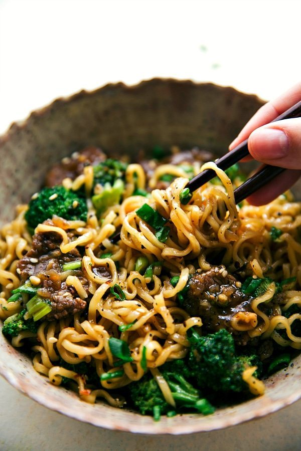

Beef & Broccoli Ramen
40Mins

Ingredients:
Preparation:
Step 1
Corta muy finamente las fajitas de res contra la fibra en tiras de 1/4 de pulgada de grosor y luego en trozos de 2 pulgadas. Coloque los trozos de carne en una bolsa ziploc grande..
Step 2
En un tazón, combine 1/4 taza de aceite vegetal, 1 cucharadita de ajo picado, 2 cucharadas de vinagre de vino tinto, 1/4 taza de miel, 1/4 taza de salsa de soya, 1/4 cucharadita de pimienta, 1/2 cucharadita de sal y 1 cucharada de cilantro.
Step 3
Batir y verter sobre las fajitas de res en la bolsa.
Step 4
Selle y coloque en el refrigerador durante al menos 1 hora y preferiblemente 6-8 + horas (no más de 12 horas). Voltee la carne en la bolsa a la mitad del tiempo de marinado.
Step 5
Hierva una olla pequeña de agua y cocine los fideos ramen durante exactamente 2 minutos. Escurrir y enjuagar con agua fría.
Step 6
Pica el brócoli en trozos iguales del tamaño de un bocado.
Step 7
Retire las fajitas de res y escurra el adobo restante.Cubra con la maicena cada pedazo de fajita.
Step 8
En una sartén grande a fuego alto, agregue 1 cucharada del aceite vegetal restante. Caliente hasta que el aceite brille y luego agregue la mitad de la carne para que pueda formar una sola capa.
Step 9
Cocine sin mover hasta que la carne esté bien chamuscada, aproximadamente 1-1 / 2 minutos. Continúe cocinando mientras revuelve hasta que la carne esté ligeramente cocida pero aún rosada en algunas partes, aproximadamente 30 segundos. Transfiera a un plato.
Step 10
Agregue la última cucharada restante de aceite a la sartén y caliente hasta que brille. Agregue la carne restante y cocine sin mover hasta que la carne esté bien chamuscada, aproximadamente 1-1 / 2 minutos. Cocine por otros 30 segundos.
Step 11
Transfiera el resto de la carne al plato.
Step 12
En la misma sartén, agregue el caldo de res, el azúcar morena, la salsa de soja restante, el aceite de sésamo, la salsa de ostras, el ajo restante y el jengibre.
Step 13
Revuelva y cocine (sin tapar) a fuego medio hasta que la salsa espese un poco y se reduzca en aproximadamente un tercio (aproximadamente 5-8 minutos). No querrás reducirlo demasiado para que aún pueda cubrir generosamente todos los fideos y verduras.
Step 14
Lleva la mezcla a ebullición. Una vez que esté hirviendo, cubra la mezcla uniformemente con el brócoli (no lo revuelva). Cubra la olla con una tapa y reduzca el fuego a bajo.
Step 15
Deje que el brócoli se cocine al vapor hasta que esté tierno y crujiente durante unos 3 minutos o hasta que esté tierno.
Step 16
Retire la tapa, agregue la pasta cocida y la carne cocida.
Step 17
Revuelva y cubra con los ingredientes deseados: cebollas verdes, hojuelas de pimiento rojo, semillas de sésamo.
Step 18
Disfrútelo de inmediato.